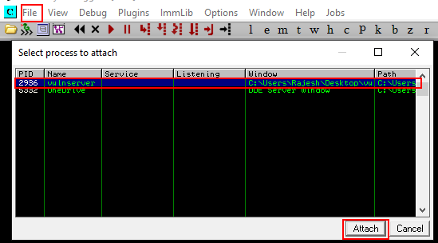

Prerequisites:
> A malicious program installed and running as administrator on target machine (here Vulnserver)
> Immunity debugger installed and running as administrator on target machine
> Real time protection off on target machine
Step 1: open Debugger and File>Attach>vulnserver>Attach

Step 2) Run it

Note : Vulnserver runs on 9999 port by defaylt
Step 3: Connect to vulnserver via netcat
nc -nv <ip address of machine> <port>

Now here we got different commands

1) Spiking
We'll do spiking on each command
So to do spiking we need to use generic_send_tcp

So we need to create spike_script
stats.spk

Here we are going to read the lines and take the string with STATS and send variable 0 in different combinations and iterations trying to break the program
Run

You can see that it started fuzzing for STATS but program doesn't break as shown in immunity debugger
Similarly we'll do for next commands
Let's do on TRUN command

Now if we again run the generic_send_tcp command
This time in immunity debugger we'll see

And in registers
We see hex code of A in EIP

therefore by spiking we found the vulnerable pogram
Finding: TRUN is vulnerable
2) Fuzzing
Again re-run the immunity debugger and vulnserver and attach the PID
We'll create a python Script

Make it executable
Now we'll execute it
./1.py
And the vuln server screen will look like this

We will see this on immunity debugger after sometime

Now Ctrl+C on the script
It'll return an address

Finding: We'll round it up to 3000 and consider it as a byte size and in between the server crashed (Approximate position)
Now what we'll do is create a 3000 byte length serial data and send it to buffer then we'll see what value is at EIP and will check where that value exist in serial data we created
3) Finding the offset //To find where we break the program
Metasploit provides us the tool to create that length of Serial code
 --->
--->
Copy the string

Now give the executable permission and run
We'll see that immunity debugger again crashed and note down the contents of EIP
Its basically a HEX code

Run the command to get the address of the contents present in EIP

Finding: We exactly know that after 2003 bytes data moves in EIP section.
that is with 2003 bytes we can control EIP
Now let's try to fill EIP with our desired data and test it
4) Overwrite the EIP
We discovered that their are 2003 bytes right before EIP and EIP itself is of 4bytes(Since hexadecimal)
So, let's try to overwrite those 4 specific bytes
Lets do changes in script

Make it executable and run it
We should see 42424242 in EIP

As 42 represents B
Finding: We are able to overwrite the EIP and sure with address 2003
5) Finding Bad Characters
When we generate the shell code we need to see what characters are good for shell code and what are bad
Go to : https://bulbsecurity.com/finding-bad-characters-with-immunity-debugger-and-mona-py/
Copy the bad chars

Edit the python script
remove \x00 from script
here let's say \x07 do some task when choosen so we can't use it to create a shellcode. So to check it well send all these characters and check which misbehaves/abnormal

execute the script
The immunity debugger will crash
Goto ESP (Numeric Value)->Follow in Dump

And check if any bad char is out of its place. Check till FF
 In this case no char is out of it's place.
In this case no char is out of it's place.
If there were a bad character then it would be out of its place.
For Ex:

So if we get a badcharacter then what to do?
Note them down as we'll use then while generating the shell code
Finding: No bad characters were found
5) Finding the right module
Here we mean that to find the dll or something similar inside the program(Vulnserver) which has no memory protection.
To find that we'll use Monomodule with Immunity debugger
For monomodule Visit: https://github.com/corelan/mona
Download it and paste the mona.py in path
C:\Program Files (x86)\Immunity Inc\Immunity Debugger\PyCommands

In immunity debugger
type


So first one is our prime candidate
Now lets find the opcode eqivalent of jump(Converting assembly language to hex code)


So well try each return address

In paused mode


Click on line an dpress F2 and then play
Run the script
Immunity debugger Ceashed
W are able to control EIP


Finding: We are able to control EIP (As we jumped it to 625011af address) now we just need to generate some shell code and point directly to shell code